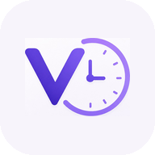

Versión 1 — octubre de 2026
Vimed es una aplicación que le recuerda a una persona cuándo tomar sus medicamentos, lleva el registro de lo que tomó y le permite a un familiar seguir ese registro.
Fue desarrollada como trabajo final de grado. No es un producto comercial y no cuenta con respaldo de una empresa.
La aplicación no indica tratamientos, no ajusta dosis, no diagnostica y no interpreta síntomas. Solo le recuerda lo que usted o su médico cargaron.
Vita, la asistente que responde preguntas dentro de la aplicación, da información general sobre medicamentos. No conoce su historia clínica y no puede decirle qué hacer en su caso. Sus respuestas las genera un sistema automático y pueden contener errores.
Ante cualquier duda sobre su tratamiento, consulte a su médico o a su farmacéutico. Ante una urgencia, llame al servicio de emergencias.
Vimed depende del celular. Una alarma puede no sonar si el teléfono está apagado, sin batería, en silencio, si el sistema operativo cierra la aplicación para ahorrar energía, o si se desactivaron los permisos de notificación.
Por eso Vimed es una ayuda, no una garantía. No deje de usar los medios que ya le funcionan —un pastillero, una lista en papel, el recordatorio de un familiar— por confiar solamente en la aplicación.
Usted es responsable de cargar correctamente sus medicamentos, sus dosis y sus horarios. Vimed muestra lo que se cargó; no puede saber si un dato es equivocado.
Si usa Vimed para seguir la medicación de otra persona, necesita su permiso. Esa persona puede desvincularlo cuando quiera.
Cuando usted acepta vincular a un familiar, esa persona pasa a ver sus medicamentos, sus horarios, sus tomas, sus citas y los avisos de olvidos o de stock bajo. No puede ver sus conversaciones con Vita.
La vinculación requiere que ambos la acepten, y cualquiera de los dos puede cortarla en cualquier momento desde la pantalla de vínculos.
Vimed está pensada para personas mayores de edad, o para quien cuida a una.
Al ser un trabajo académico, la aplicación puede dejar de actualizarse o de funcionar. Si eso pasa, sus datos dejarían de estar disponibles. Si lleva un registro que le importa conservar, no lo tenga únicamente acá.
Si no acepta estos términos, no use la aplicación. Puede desinstalarla y pedir que se borren sus datos en cualquier momento.